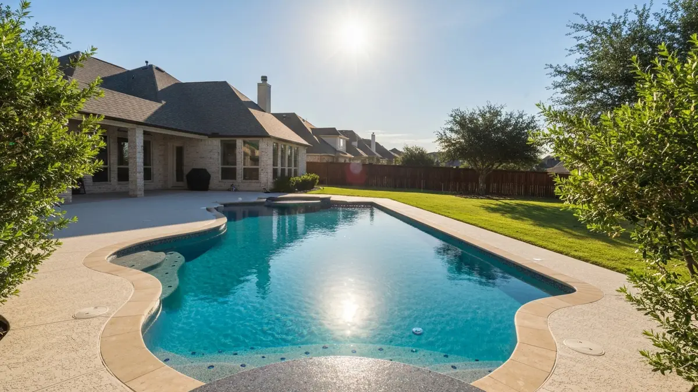

Schertz sits at the crossroads of I-35 and I-10 in Guadalupe County, making it one of the most connected suburbs in the greater San Antonio metro. With a population of around 42,000 and steady suburban growth, Schertz is home to family-friendly neighborhoods like Scenic Hills and The Crossvine where backyard pools are a common sight. The proximity of Randolph Air Force Base brings a steady flow of military families who invest in their homes during each assignment. Texas summers push pool surfaces hard, and Schertz homeowners deal with the same intense UV exposure and mineral-rich water that affect pools across the region. Alamo Pool Resurfacing provides Schertz residents with professional-grade finishes designed to last through years of heavy use and harsh Central Texas weather.

Our Pool Resurfacing Process
- Free On-Site Estimate — We visit your Schertz property to inspect the pool surface and discuss options.
- Surface Preparation — We drain and prep the pool, removing old plaster and cleaning to bare shell.
- Material Selection — Choose from plaster, pebble, quartz, or glass bead finishes.
- Expert Application — Our team applies the new surface with precision for a smooth, durable finish.
- Fill, Balance & Startup — We refill, balance water chemistry, and guide you through the curing process.
Why Schertz Homeowners Trust Alamo Pool Resurfacing
- Convenient Scheduling — We know Schertz families are busy. We offer flexible appointment windows and can typically start within one to two weeks of your call.
- Licensed, Bonded & Insured — Full coverage protects you and your property throughout every phase of the resurfacing project.
- Military-Friendly Service — With Randolph AFB nearby, we regularly work with military families on tight PCS timelines and understand the urgency.
- Durable Finishes for Texas Heat — We use professional-grade materials rated for the intense UV and temperature swings that Schertz pools endure year-round.

Frequently Asked Questions — Pool Resurfacing in Schertz
How much does pool resurfacing cost in Schertz?
Pool resurfacing in Schertz generally costs between $3,500 and $12,000. Basic white plaster starts around $3,500, quartz aggregate finishes range from $5,500 to $8,500, and premium pebble surfaces like PebbleTec run $7,000 to $12,000. Pool size and condition affect the final price. Call us for a free on-site estimate.
How long does pool resurfacing take in Schertz?
Most Schertz pool resurfacing projects are completed in 5 to 8 days. This includes 1 to 2 days for draining and surface preparation, 1 day for applying the new finish, and 3 to 5 days for filling and the initial water chemistry startup and curing period. We work efficiently to minimize disruption to your family.
Do you resurface pools near Randolph AFB in Schertz?
Yes, we regularly serve homeowners in the neighborhoods surrounding Randolph Air Force Base, including housing in Schertz, Universal City, and Converse. We understand the needs of military families who may be on tight timelines. We offer flexible scheduling and can often begin projects within one to two weeks of your initial call.
Need Pool Resurfacing in Schertz? Call Now
We're your local pool resurfacing experts serving Schertz and all surrounding areas.
📞 Call (726) 268-5597